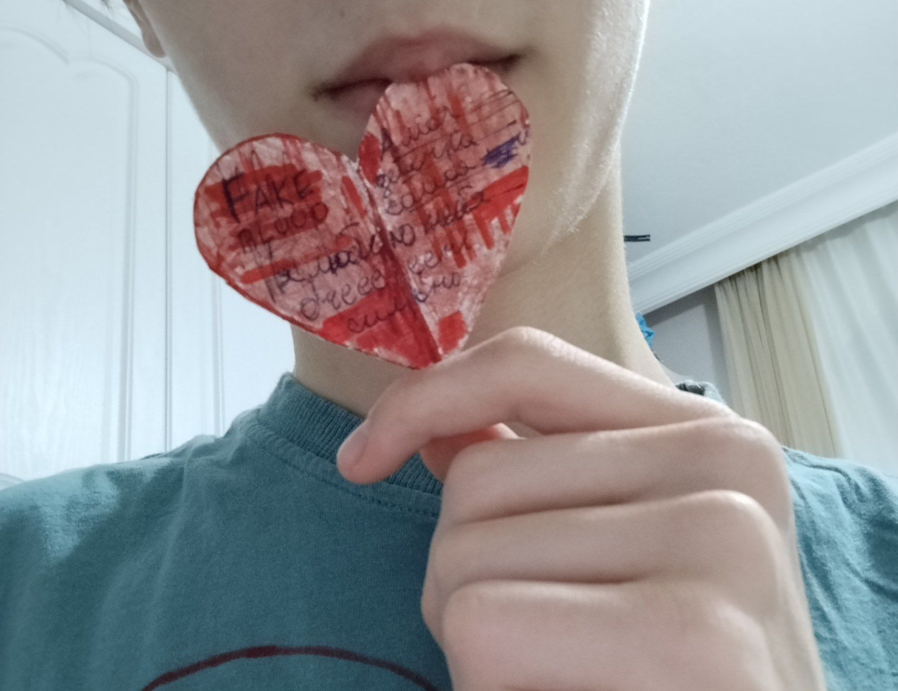
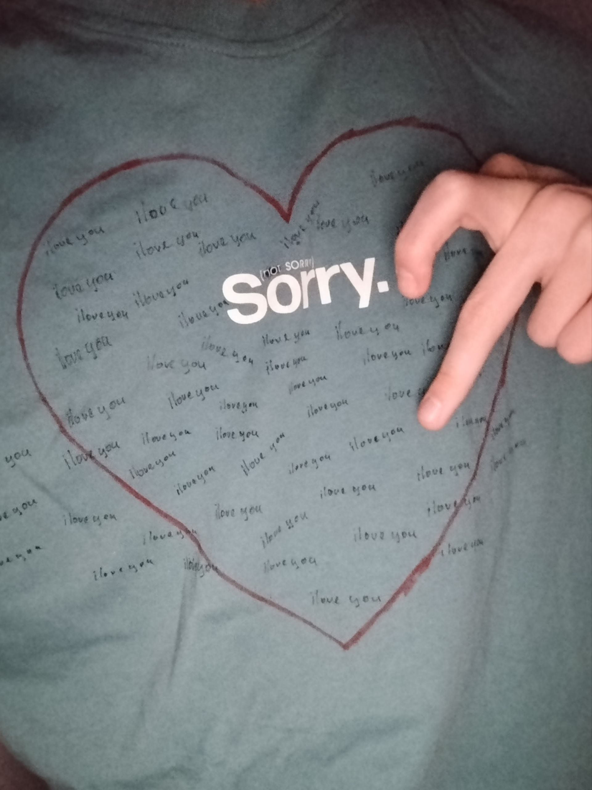

Этот сайт создан только для тебя, Принцесска!
Открыть письмо
Мое письмо для тебя
Фотачки:>
Наши лучшие моменты


Сюрприз
Сюрприз для тебя!
Ваш браузер не поддерживает видео.
Завершить
Спасибо, что ты есть у меня. Люблю тебя безумно сильно!
❤️
Включить музыку(желательно в конце)
Ваш браузер не поддерживает аудио.